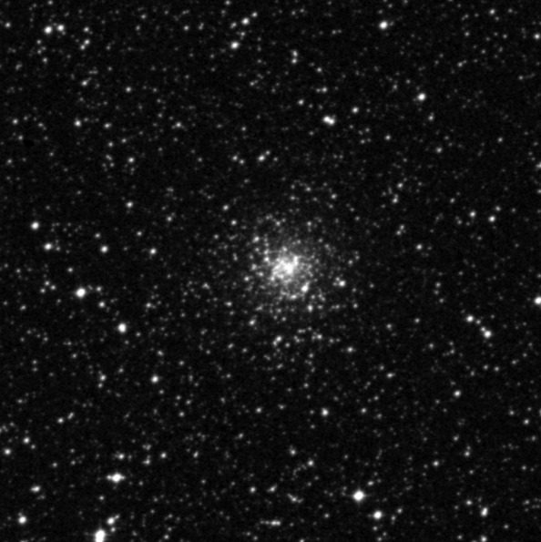
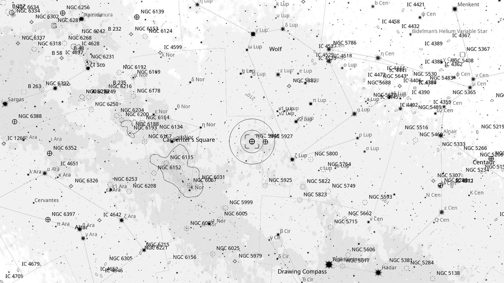
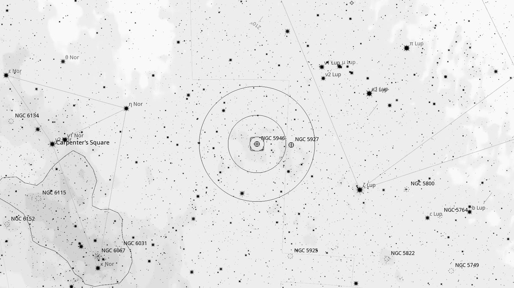
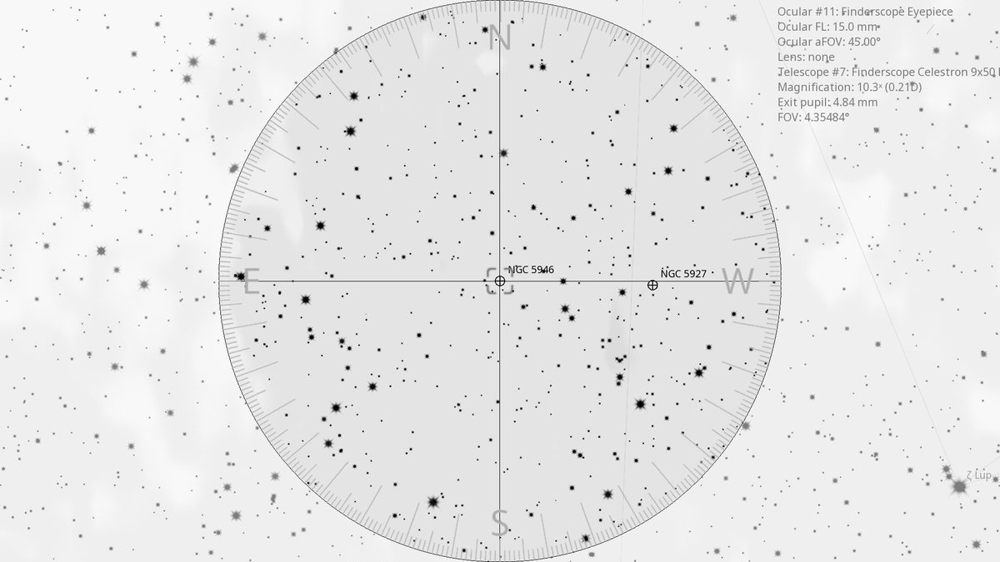
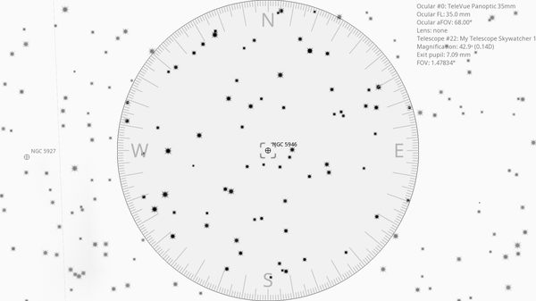

NGC 5946 (GC)
Globular Cluster in Norma
| R.A. | Dec. | Size | Mag | SB | Cnt.St | Type | Distance | Chart |
|---|---|---|---|---|---|---|---|---|
| 15h 35m 30.6s | -50° 39′ 35.9″ | 1.0′ | 10.7 | 10.5 | IX | GC | -- | -- |

Source: POSS-2 UK Schmidt Red (STScI) | Field: 10′ × 10′
Interactive Sky View
Powered by Aladin Lite / CDS, Strasbourg.
Pan, zoom, or switch surveys using the layer icon.
Background
NGC 5946 is a small, faint globular cluster of about 10th magnitude, set near the Lupus border of Norma. Discovered by James Dunlop in 1826 and duly noted in his observing log — but apparently missed from his published list of discoveries; John Herschel rediscovered it in 1834. Around 2' in diameter, it is one of the more obscure globulars in Caldwell's neighbourhood, often passed over for its showier neighbours. A class IX cluster (very loose).
My Observing Notes
(Not yet observed — on the Norma list from the May 2026 Universe Sky Tonight column.)
References
Charts

Ultra-wide view (~25° field)

Wide-field view with Telrad rings (4°, 2°, 0.5°)

Finderscope view (9×50 RACI, ~4.4° TFOV)

Eyepiece view — 35 mm Panoptic on 12-inch f/5 (1.6° TFOV)